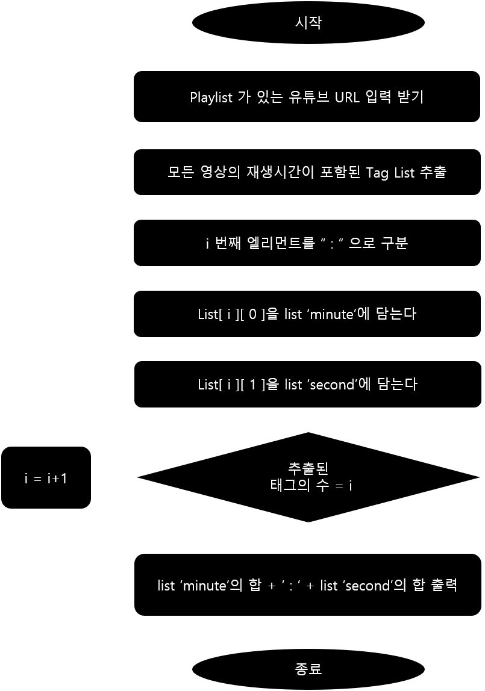

유튜브 러닝타임 카운터
유튜브에 있는 코딩강의들을 보며 공부하던 저는 하루에 들어야할 강의들의 재생시간을 계산하며 스케줄을 짜곤 했습니다. 하지만 유튜브 재생목록 리스트에는 리스크에 포함된 모든 동영상의 총 재생시간이 기재되어 있지 않아 일일이 계산기를 뚜드려 계산해야 했습니다.
코마드 코더 에서 파이썬 웹스크랩핑 강의를 수강한 후 각 영상의 재생시간이 포함된 태그들을 긁어와 계산하는 파이썬 프로그램을 구상했지만, 강의에 사용되었던 Beautifulsoup 라이브러리는 동적 컨텐츠를 긁어오는데 어려움이 있었습니다. 따라서 Selenium 라이브러리를 통해 이 문제를 해결 한후 결과물을 출력 할 수 있었습니다.
logic

Demonstrate video